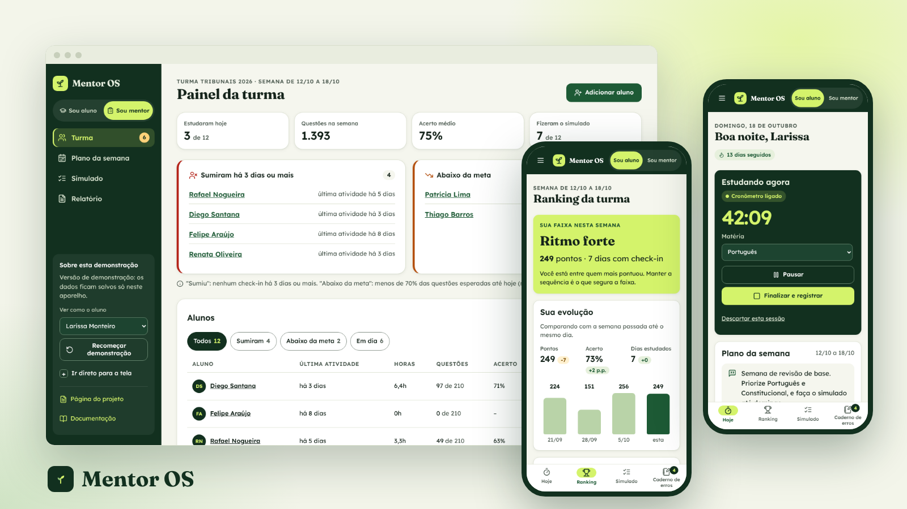
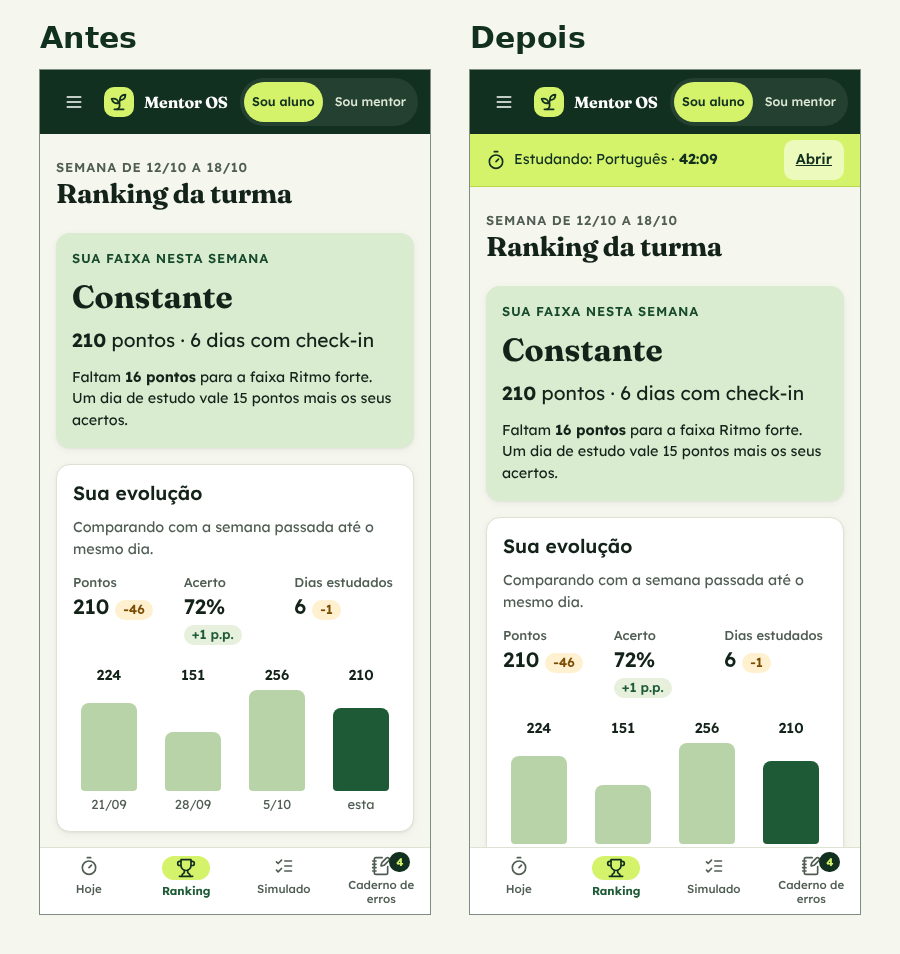
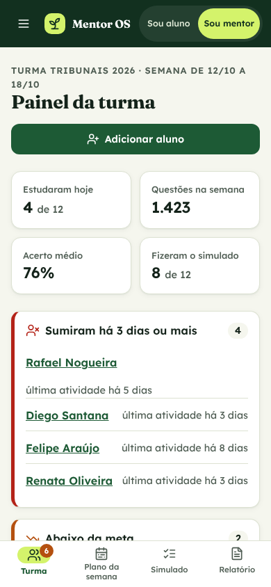
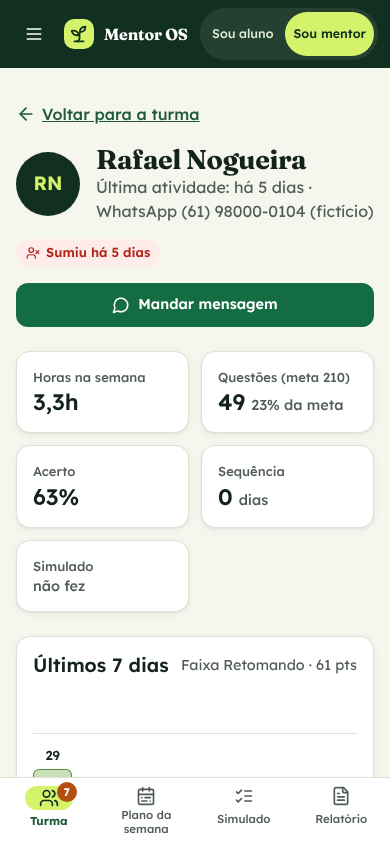
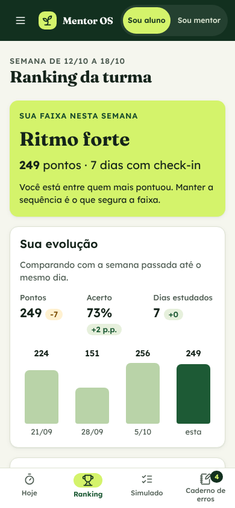
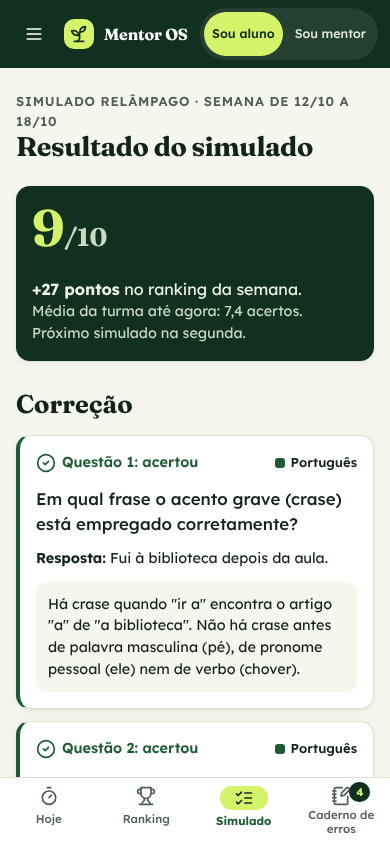

Mentor OS
Um app com duas visões: o aluno registra o estudo pelo número de questões e mantém a sequência; o mentor descobre em um minuto quem precisa dele hoje e manda mensagem pelo WhatsApp.

Contexto
Mentores independentes de concurso vendem acompanhamento: montam o plano da semana, cobram constância e ajustam a rota. Só que esse acompanhamento costuma viver numa planilha que o aluno preenche quando lembra e num grupo de WhatsApp onde tudo se perde. O aluno que para de estudar simplesmente some, e o mentor só percebe semanas depois.
O Mentor OS é um projeto conceitual que fiz sozinho, mas pensado para funcionar de verdade: o app roda no navegador, salva os dados no aparelho e já tem o banco desenhado para a versão com login. O aluno usa de graça e o mentor paga a mensalidade. Todos os nomes, números e questões são fictícios.
O mentor acompanha a turma por planilha e grupo de WhatsApp e só descobre que um aluno sumiu quando ele já desistiu.O problema, em uma frase
Processo
Comecei por um benchmark de cinco referências conhecidas: o GymRats, de desafios de check-in em grupo; o Qconcursos e o Tec Concursos, bancos de questões focados no aluno; as planilhas e páginas de Notion que mentores montam; e os grupos de WhatsApp, onde a conversa acontece. Cada um resolve uma parte, mas nenhum mostra ao mentor quem precisa dele hoje.
Constância vira jogo
Desafios em grupo mostram que aparecer todo dia mantém as pessoas. Trouxe a sequência de dias e pontos por dia estudado, mas trocando a foto pelo número de questões como prova de estudo.
O aluno estuda sozinho
Bancos de questões medem o desempenho de cada aluno, mas o mentor não vê a turma junta. O Mentor OS não compete com eles: registra o resultado de onde o aluno estudou e junta tudo no painel.
O WhatsApp fica
Ninguém vai trocar o canal com o aluno. O app decide com quem falar, com alertas de "sumiu há 3 dias" e "abaixo da meta", e abre o WhatsApp com a mensagem pronta.
Montei duas proto-personas, o mentor que paga e a aluna que usa, marcadas como hipótese porque não vieram de entrevistas. A jornada de uma semana mostrou o momento crítico: o terceiro dia sem estudar, quando a desistência começa e o mentor ainda não sabe. A partir daí desenhei os fluxos de check-in e de alerta, as regras de pontuação e todos os estados: vazio, erro, confirmação e aluno não encontrado.
Avaliei a primeira versão funcional com as 10 heurísticas de Nielsen e encontrei 8 problemas, dos quais corrigi 6. O mais grave era o cronômetro esquecido: a aluna ligava, ia ver o ranking e não havia sinal de que ele continuava contando. Agora uma faixa fixa mostra a matéria e o tempo em qualquer tela. Editar uma sessão já registrada e as boas-vindas do primeiro acesso ficaram para a próxima versão.

Solução
Na visão do aluno, a tela Hoje tem o cronômetro com iniciar, pausar e finalizar; no fim, a pessoa informa questões feitas e acertos. O ranking da semana premia acertos e constância, não horas, mostra a regra e divide a turma em três faixas, com a própria evolução e quantos pontos faltam para subir, para não desanimar quem está atrás. O simulado relâmpago corrige na hora e manda os erros para um caderno com revisão em 1, 7 e 21 dias. Na visão do mentor, o painel abre com os alertas, a lista de alunos e o detalhe de cada um com o gráfico da semana e o botão de WhatsApp. O plano semanal é montado em uma tela e o relatório da semana sai pronto, em uma versão para a turma e outra só para o mentor.






Handoff
Para o produto sair do papel, o desenvolvimento precisa de mais do que telas bonitas. Entreguei:
- O app funciona de verdade no navegador e pode ser instalado no celular. Os dados ficam salvos no aparelho, com dados de demonstração e botão para recomeçar.
- O banco já está pronto para a versão com login: tabelas, regras de acesso por aluno, mentor e escola, e uma função de ranking que não expõe os dados dos colegas.
- Regras de negócio escritas e iguais no app e no banco: pontos do ranking, faixas, "sumiu" e "abaixo da meta".
- Cores e tipografia em tokens, com o contraste de cada par anotado, e estados de cada tela documentados em fluxos.
Resultado
- 9
- telas no app
- 8
- problemas achados na heurística
- 6
- corrigidos
- 5
- produtos no benchmark
O próximo passo é testar com 5 pessoas: 2 mentores e 3 alunos. Os alunos fariam um check-in, descobririam o que fazer para subir de faixa e revisariam os erros do dia; os mentores encontrariam quem precisa deles e montariam o plano da semana. Eu mediria a taxa de sucesso, o tempo do check-in, o tempo para achar quem sumiu e como quem está no fim do ranking se sente. Em paralelo, validaria a venda em duas semanas com um piloto pago para os primeiros mentores.
Aprendizados
- A prova certa muda o comportamento. Pedir o número de questões, e não horas ou foto, alinha o registro com o que faz passar na prova.
- Ranking precisa cuidar de quem está atrás. Faixa, evolução própria e "faltam X pontos" transformam a comparação em próximo passo.
- Não brigar com o canal que já existe. O app decide com quem falar e entrega o texto; a conversa continua no WhatsApp.
Entregas
App para quem tem carro elétrico achar um carregador livre, funcionando e compatível, reservar a vaga e pagar a recarga no mesmo lugar.